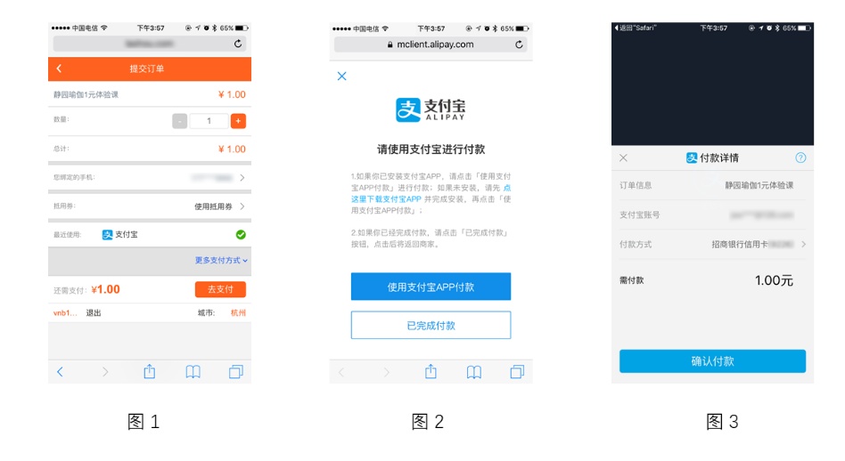
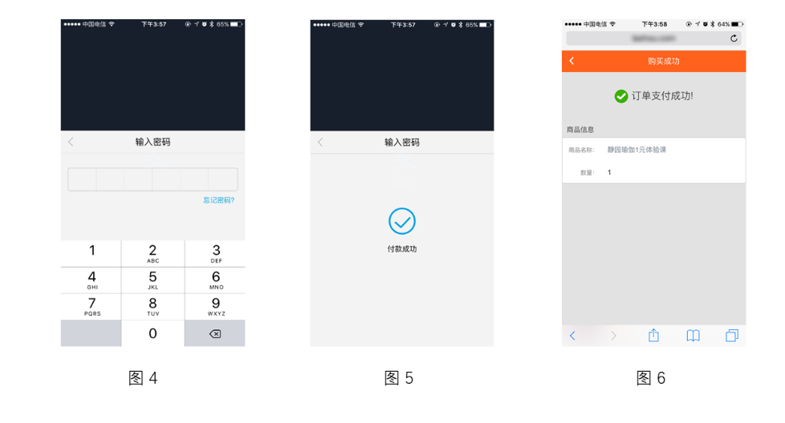
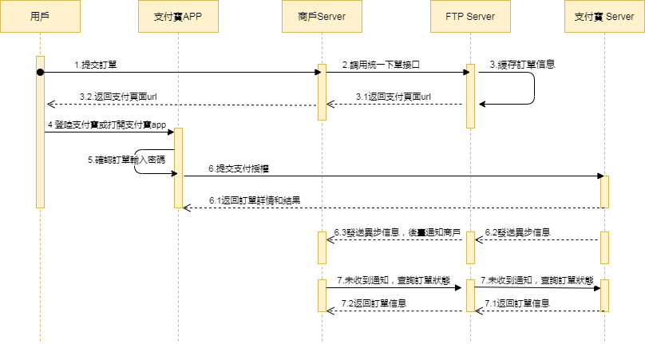

Alipay WAP Payment QR Pay（Online）
Online Payment
Alipay WAP Payment API Document
| Date | Version | Changes |
|---|---|---|
| 2025-12-19 | 1.0 | Initial draft |
1 Introduction
1.1 Document Overview
Alipay WAP Payment is a payment method where the merchant initiates Alipay payment in a mobile web application to complete the transaction.
It is applicable for merchants integrating Alipay payment in mobile web applications. The merchant calls the web payment interface provided by Alipay in the web page to invoke the payment module within the Alipay client. The merchant's web page will redirect to Alipay to complete the payment, and then redirect back to the merchant's web page to display the payment result. If the Alipay client cannot be invoked, the web payment flow will be automatically entered after a certain period of time.
Payment flow:
Step (1): The user accesses the merchant's web application in a browser, selects a product to place an order, confirms the purchase, enters the payment step, selects Alipay to pay, and the user clicks Pay, as shown in Figure 1;
Step (2): Enter the Alipay payment routing page. Alipay processes the payment request and attempts to invoke the Alipay client, as shown in Figure 2 (this page cannot be customized or removed);
Step (3): Enter the Alipay page, invoke Alipay payment, and the confirm payment interface appears, as shown in Figure 3;
Step (4): The user confirms the payee and the amount, clicks Pay Now and the password input interface appears, as shown in Figure 4;
Step (5): After entering the correct password, the Alipay terminal displays the payment result, as shown in Figure 5;
Step (6): Automatically redirect back to the browser, and the merchant displays the order processing result in a personalized manner based on the payment result, as shown in Figure 6.


1.2 Intended Audience
For technical or business personnel of the merchant platform service provider to reference and query.
2 Solution Overview
2.1 Business Implementation Flow
API call sequence:
The Order API, Payment Notification API, and Query Order API all involve the signing process, and the calls must be completed on the merchant server side. The sequence diagram is as follows:

3 Data Format
3.1 Submitted Data
Uses HTTPS standard POST protocol. To ensure the receiver correctly receives the data, the transmitted data must be signed.
{
"service":"pay.alipay.wappay.intl",
"client_id":"1001",
"store_id":"1001001",
"order_no":"a0e55bf5349a4a31a9fcf689ceb079bd",
"body":"Office cabinet, good quality, very beautiful",
"amount":1.0,
"notify_url":"http://localhost/pay/notify",
"payment_inst":"ALIPAYCN",
"client_ip":"127.0.0.1",
"attach":"string",
"nonce_str":"818qbn2t",
"sign":"C38E845F27E077C02EF6194ABC30E0AA",
"lang":"en_US"
}
3.2 Return Result Data Format
Successful return:
{
"message":"SUCCESS",
"order_no":"a0e55bf5349a4a31a9fcf689ceb079bd",
"transaction_id":"FTP202012181614010001",
"submit_time":"20201218161401",
"pay_url":" ",
"nonce_str":"5wtazrkr",
"sign":"7862591E1C4E5FFAACD3DF85AF4235ED"
}
Error return:
{
"message":"Missing Merchant ID",
JSON"errors":[
{
"field":"mch_id",
"message":"Missing Merchant ID",
"code":"MISSING_FIELD"
}
]
}
If message returns a value other than SUCCESS, it indicates an API call error.
4 Digital Signature
To ensure authenticity and integrity of data during transmission, we need to digitally sign the data and verify the signature after receiving the signed data.
Digital signature has two steps: first concatenate the raw signature string according to certain rules, then select a specific algorithm and key to compute the signature result.
4.1 Signature Raw String
For both requests and responses, the raw signature string is assembled as follows: 1. Except for the sign field, all parameters are sorted by the ASCII code of the field name in ascending order and concatenated in QueryString format (i.e. key1=value1&key2=value2…) . Empty values are not transmitted and do not participate in the signature string assembly. 2. In the raw signature string, both field names and field values use their original values without URL Encode.
3. The platform's response or notification messages may add parameters due to upgrades. Please allow for this when verifying the response signature.
Example:
Call an API with the following fields:
{
"client_id":"1001",
"store_id":"1001001",
"service":"pay.alipay.wappay.intl",
"order_no":"Me08772e914454656bf26ec8996e35bb",
"amount":"1",
"body":"a chair",
"notify_url":"2031",
"payment_inst":"ALIPAYHK",
"client_ip":"127.0.0.1",
"nonce_str":"1409196838",
"sign":"22C9835251DCF58BB70C78FA8D6448BD"
}
The correct signature field sort order is:
amount=1&body=a chair&client_id=1001&client_ip=127.0.0.1&nonce_str=1409196838¬ify_url=2031&order_no=Me08772e914454656bf26ec8996e35bb&payment_inst=ALIPAYHK&service=pay.alipay.wappay.intl&store_id=1001001
4.2 Signature Algorithm
MD5 Signature MD5 is a digest generation algorithm. By appending the merchant communication key content to the raw signature string and performing MD5 computation, the resulting digest string is the signature result. For easy comparison, the signature result is uniformly converted to uppercase characters.
Note: The character encoding specified when converting the string to a byte stream must be consistent with the charset parameter. MD5 signature formula: sign = MD5 (raw string + &key=merchant key). toUpperCase
Assume the merchant key is: MjNiYWE4NGY2YTMxNDk2MTljODBkMjZkMjk0NjAxY2M=
Example: Assume the following JSON input parameters: i: After process a, the string1 sorted by URL key-value lexicographic order is: amount=1&body=a chair&client_id=1001&client_ip=127.0.0.1&nonce_str=1409196838¬ify_url=2031&order_no=Me08772e914454656bf26ec8996e35bb&payment_inst=ALIPAYHK&service=pay.alipay.wappay.intl&store_id=1001001 ii: After process b, the sign is:
sign = md5(string1+&key=merchant key).toUpperCase
The actual encrypted string is:
sign = md5(amount=1&body=a chair&client_id=1001&client_ip=127.0.0.1&nonce_str=1409196838¬ify_url=2031&order_no=Me08772e914454656bf26ec8996e35bb&payment_inst=ALIPAYHK&service=pay.alipay.wappay.intl&store_id=1001001&key=MjNiYWE4NGY2YTMxNDk2MTljODBkMjZkMjk0NjAxY2M=).toUpperCase
The final signature is: A07724CDB9D232A3B9AA7DD68CD26FAE
The sign and lang fields do not participate in the API signature. The same rule applies to decrypting API response parameters.
4.3 Request Headers
Request parameters:
| Field Name | Variable | Required | Type | Description |
|---|---|---|---|---|
| Content Type | Content-Type | Yes | String(32) | Value: application/json, the request content type |
5 API Description
5.1 Order API
5.1.1 Business Function
Invoke the Alipay client via URL in the mobile browser to complete the payment.
Cross-border: After an overseas acquiring buyer places an order for a product priced in foreign currency on an overseas merchant website and selects Alipay to pay, the overseas merchant system calls the Alipay overseas acquiring payment access API. The page redirects to the Alipay checkout, and Alipay will automatically display the product price in RMB to the overseas acquiring buyer.
HK wallet local payment: After a Hong Kong buyer places an order for a product priced in HKD on a merchant website and selects Alipay to pay, the overseas merchant system calls the Alipay overseas acquiring payment access API. The page redirects to the Alipay checkout, and Alipay will automatically display the product price in HKD to the Alipay HK wallet acquiring buyer.
5.1.2 Interaction Mode
Request: Backend synchronous request mode
Return result + notification: Backend request interaction mode + backend notification interaction mode
5.1.3 Request Parameter List
Request URL: https://api.fintechpaymenthub.com/openapi/v1/pay
Request the API via POST JSON body
| Field Name | Variable | Required | Type | Description |
|---|---|---|---|---|
| API Type | service | Yes | String(40) | Fixed: pay.alipay.wappay.intl |
| Client ID | client_id | Yes | String(32) | Merchant client ID |
| Store ID | store_id | Yes | String(50) | Store ID |
| Merchant Order No. | order_no | Yes | String(32) | Order number within the merchant system, within 32 characters, may contain letters, ensure it is unique in the merchant system |
| Product Description | body | Yes | String(127) | Product description information |
| Amount | amount | Yes | String(15) | Total order amount (must be greater than 0), in yuan. |
| Notification URL | notify_url | Yes | String(255) | URL to receive platform notifications, must be an absolute path, within 255 characters, format such as: http://wap.tenpay.com/tenpay.asp, ensure the platform can access this address via the internet |
| Callback URL | callback_url | No | String(255) | The merchant-specified page to return to after the transaction payment is completed. Must be an absolute path, within 255 characters, ensure the platform can access this address via the internet. Only the HK wallet supports this field. |
| Terminal IP | client_ip | Yes | String(16) | The IP of the machine that generated the order |
| Payment Instance | payment_inst | Yes | String(10) | Used to determine the wallet type for payment: please pass ALIPAYHK/ALIPAYCN, ALIPAYHK: HK wallet; ALIPAYCN: Mainland wallet |
| Additional Information | attach | No | String(127) | Merchant additional information, can be used as extension parameter |
| Random String | nonce_str | Yes | String(32) | Random string, no longer than 32 characters, a different value must be passed each time it is submitted |
| Signature | sign | Yes | String(32) | See Chapter 4 "Signature Rules" |
| Language | lang | No | String(32) | Language |
5.1.4 Return Result
Data is returned immediately in JSON format
| Field Name | Variable | Required | Type | Description |
|---|---|---|---|---|
| Merchant Order No. | order_no | Yes | String(32) | Order number generated by the merchant |
| FTP Order No. | transaction_id | Yes | String(26) | Order number generated by FTP |
| Submit Time | submit_time | Yes | String(50) | Format is yyyyMMddhhmmss |
| Payment Redirect URL | pay_url | Yes | String(64) | pay_url is the intermediate page that invokes the WeChat Pay checkout. You can invoke the WeChat client by accessing this URL to complete the payment |
| Result Message | message | Yes | String(500) | Describes the query result. SUCCESS indicates success, otherwise returns other error messages |
| Random String | nonce_str | Yes | String(32) | Random string, no longer than 32 characters |
| Signature | sign | Yes | String(32) | See Chapter 4 "Signature Rules" |
5.1.5 Test Cases
Test cases are provided for convenient invocation
Submitted data:
| Example |
|---|
| { "service":"pay.alipay.wappay.intl", "client_id":"1001", "store_id":"1001001", "order_no":"a0e55bf5349a4a31a9fcf689ceb079bd", "body":"Office cabinet, good quality, very beautiful", "amount":1.0, "notify_url":"http://localhost/pay/notify", "callback_url":"http://xxxx/pay-result.html", "payment_inst":"ALIPAYCN", "client_ip":"127.0.0.1", "attach":"string", "nonce_str":"818qbn2t", "sign":"C38E845F27E077C02EF6194ABC30E0AA", "lang":"en_US" } |
Successful return data:
| Example |
|---|
| { "message":"SUCCESS", "order_no":"a0e55bf5349a4a31a9fcf689ceb079bd", "transaction_id":"FTP202012181614010001", "submit_time":"20201218161401", "pay_url":" ", "nonce_str":"5wtazrkr", "sign":"7862591E1C4E5FFAACD3DF85AF4235ED" } |
5.2 Invoke Payment API
5.2.1 Business Function
When the merchant has closed the payment page for some reason and needs to pay again, use the URL returned by this API to invoke the Alipay client again in the mobile browser to complete the payment.
Cross-border: After an overseas acquiring buyer places an order for a product priced in foreign currency on an overseas merchant website and selects Alipay to pay, the overseas merchant system calls
the Alipay overseas acquiring payment access API. The page redirects to the Alipay checkout, and Alipay will automatically display the product price in RMB to the overseas acquiring buyer.
HK wallet local payment: After a Hong Kong buyer places an order for a product priced in HKD on a merchant website and selects Alipay to pay, the overseas merchant system calls
the Alipay overseas acquiring payment access API. The page redirects to the Alipay checkout, and Alipay will automatically display the product price in HKD to the Alipay HK wallet acquiring buyer.
5.2.2 Interaction Mode
Request: Backend synchronous request mode
Return result + notification: Backend request interaction mode + backend notification interaction mode
5.2.3 Request Parameter List
Request URL: https://api.fintechpaymenthub.com/openapi/v1/pay-again
Request the API via POST JSON body
| Field Name | Variable | Required | Type | Description |
|---|---|---|---|---|
| API Type | service | Yes | String(40) | Fixed: pay.alipay.wappay.intl |
| Client ID | client_id | Yes | String(32) | Merchant client ID |
| Store ID | store_id | Yes | String(50) | Store ID |
| Merchant Order No. | order_no | No | String(32) | Order number generated by the merchant |
| FTP Order No. | transaction_id | No | String(26) | FTP order number. At least one of order_no and transaction_id is required. When both exist, transaction_id takes priority |
| Random String | nonce_str | Yes | String(32) | Random string, no longer than 32 characters |
| Signature | sign | Yes | String(32) | See Chapter 4 "Signature Rules" |
5.2.4 Return Result
Data is returned immediately in JSON format
| Field Name | Variable | Required | Type | Description |
|---|---|---|---|---|
| Merchant Order No. | order_no | Yes | String(32) | Order number generated by the merchant |
| FTP Order No. | transaction_id | Yes | String(26) | Order number generated by FTP |
| Submit Time | submit_time | Yes | String(50) | Format is yyyyMMddhhmmss |
| Payment Redirect URL | pay_url | Yes | String(64) | pay_url is the intermediate page that invokes the WeChat Pay checkout. You can invoke the WeChat client by accessing this URL to complete the payment |
| Result Message | message | Yes | String(500) | Describes the query result. SUCCESS indicates success, otherwise returns other error messages |
| Random String | nonce_str | Yes | String(32) | Random string, no longer than 32 characters |
| Signature | sign | Yes | String(32) | See Chapter 4 "Signature Rules" |
5.2.5 Test Cases
Test cases are provided for convenient invocation
Submitted data:
| Example |
|---|
| { "service":"pay.alipay.wappay.intl", "order_no":"", "transaction_id":"FTP202012181614010001", "client_id":"1001", "store_id":"1001001", "nonce_str":"tu56xay7", "sign":"C5A43A052D26A25C5643DBF676CE0FA0" } |
Successful return data:
| Example |
|---|
| { "message":"SUCCESS", "order_no":"a0e55bf5349a4a31a9fcf689ceb079bd", "transaction_id":"FTP202012181614010001", "submit_time":"20201218161401", "pay_url":" ", "nonce_str":"5wtazrkr", "sign":"7862591E1C4E5FFAACD3DF85AF4235ED" } |
5.3 Order Query API
5.3.1 Business Function
Query specific order information on the platform by merchant order number or FTP order number.
5.3.2 Interaction Mode
Backend system call interaction mode
5.3.3 Request Parameter List
Request URL: https://api.fintechpaymenthub.com/openapi/v1/query Request via POST JSON body
| Field Name | Variable | Required | Type | Description |
|---|---|---|---|---|
| API Type | service | Yes | String(40) | Fixed: pay.alipay.wappay.intl |
| Client ID | client_id | Yes | String(32) | Merchant client ID |
| Store ID | store_id | Yes | String(50) | Store ID |
| Merchant Order No. | order_no | No | String(32) | Order number generated by the merchant |
| FTP Order No. | transaction_id | No | String(26) | FTP order number. At least one of order_no and transaction_id is required. When both exist, transaction_id takes priority |
| Random String | nonce_str | Yes | String(32) | Random string, no longer than 32 characters |
| Signature | sign | Yes | String(32) | See Chapter 4 "Signature Rules" |
| Language | lang | No | String(32) | Language |
5.3.4 Return Result
Data is returned immediately in JSON format
| Field Name | Variable | Required | Type | Description | |
|---|---|---|---|---|---|
| FTP Order No. | transaction_id | Yes | String(26) | Order number generated by FTP | |
| Merchant Order No. | order_no | Yes | String(32) | Order number generated by the merchant | |
| Store ID | store_id | Yes | String(50) | Store ID | |
| Submit Time | submit_time | Yes | String(32) | Format is yyyyMMddhhmmss | |
| Trade State | trade_state | Yes | String(32) | SUCCESS—Payment successful NOTPAY—Pending payment PROCESSING—Processing REFUND—Refunded CANCEL—Closed FAIL—Failed | |
| Amount | amount | Yes | Double | Total order amount (must be greater than 0), in RMB yuan. For example, if the total order amount is 1 yuan, amount is 1. | |
| Currency | currency | Yes | String(3) | 3-digit ISO currency code, uppercase letters, RMB is CNY. | |
| Payment Completion Time | pay_finish_time | Yes | String(32) | Payment completion time, format is yyyyMMddhhmmss, for example, December 27, 2009, 9:10:10 is represented as 20091227091010. Timezone is GMT+8 Beijing. | |
| Product Description | body | Yes | String(127) | Product description information | |
| Refund Amount | refund_amount | Yes | Double | Refund amount, in RMB yuan. For example, if the total order amount is 1 yuan, amount is 1. | |
| Third-party Merchant No. | out_transaction_id | Yes | String(32) | Corresponds to the transaction number in the Alipay transaction record bill details | |
| Additional Information | attach | No | String(127) | Merchant data packet, returned as is | |
| Result Message | message | Yes | String(500) | Describes the query result. SUCCESS indicates success, otherwise returns other error messages | Describes the query result. SUCCESS indicates success, otherwise returns other error messages |
| Random String | nonce_str | Yes | String(32) | Random string, no longer than 32 characters | |
| Signature | sign | Yes | String(32) | See Chapter 4 "Signature Rules" |
5.3.5 Test Cases
Test cases are provided for convenient invocation
Submitted data:
| Example |
|---|
| { "service":"pay.alipay.wappay.intl", "order_no":"", "transaction_id":"FTP202012181614010001", "client_id":"1001", "store_id":"1001001", "nonce_str":"tu56xay7", "sign":"C5A43A052D26A25C5643DBF676CE0FA0", "lang":"en_US" } |
Successful return data:
| Example |
|---|
| { "message":"SUCCESS", "transaction_id":"FTP202012181614010001", "order_no":"a0e55bf5349a4a31a9fcf689ceb079bd", "store_id":"1001001", "submit_time":"20201218161401", "trade_state":"SUCCESS", "amount":1, "currency":"HKD", "pay_finish_time":"20201110111036", "body":"Office cabinet, good quality, very beautiful", "refund_amount":0, "nonce_str":"wba85dma", "sign":"36F84957B37B052D23CBE55F1D9D3C90", "out_transaction_id":"127500000158202011103391384234", "attach":"string" } |
5.4 Refund API
5.4.1 Business Function
The merchant initiates a refund for an order that has been successfully paid, and the operation result is returned synchronously in the same session.
I. Refund Method
Currently only supports refund via the original route.
Note: Refunds to bank cards are not real-time. The processing speed varies by bank. Generally, the refund will be credited within 1-3 business days after initiation.
Partial refunds for the same order require the same order number and different out_refund_no. If a refund fails and needs to be resubmitted, use the original out_refund_no. The total refund amount cannot exceed the actual amount paid by the user (cash voucher amounts cannot be refunded).
II. Refund Restrictions
Merchants should pay attention to refund restrictions when performing refund operations to avoid initiating refund requests that will not succeed. The main refund restrictions are as follows:
1. On the platform, as long as the cumulative refund amount does not exceed the total payment amount of the transaction, a transaction can be refunded multiple times. The refund application number (this parameter exists in the refund API) uniquely identifies a refund, rather than the transaction number identifying a refund. The refund application number is generated by the merchant, so the merchant
must ensure the uniqueness of the refund application number. Merchants should pay special attention during the refund process that a new refund can only be initiated when it is certain that the refund has failed.
2. Currently, most banks support both full and partial refunds, but a few banks do not support full or partial refunds, or
do not support refunds at all. In this case, the merchant can coordinate with the seller to refund to the Alipay account.
Currently only the keyless refund API is provided. For merchants needing the keyed refund API, please contact the business department.
5.4.2 Interaction Mode
Backend system call interaction mode
5.4.3 Request Parameter List
Request URL: https://api.fintechpaymenthub.com/openapi/v1/refund Request via POST JSON body
| Field Name | Variable | Required | Type | Description |
|---|---|---|---|---|
| API Type | service | Yes | String(40) | Fixed: pay.alipay.wappay.intl |
| Client ID | client_id | Yes | String(32) | Merchant client ID |
| Store ID | store_id | Yes | String(50) | Store ID |
| Merchant Order No. | order_no | No | String(32) | Original order number generated by the merchant (one of the two order numbers must be filled in) |
| FTP Order No. | transaction_id | No | String(26) | Original order number generated by FTP (one of the two order numbers must be filled in) |
| Merchant Refund No. | out_refund_no | Yes | String(32) | Merchant refund number, within 32 characters, may contain letters, ensure it is unique in the merchant system. Multiple requests with the same refund number, the platform treats as one order and only refunds once. If the refund is unsuccessful, please use the original refund number to resubmit to avoid duplicate refunds. |
| Remarks | remarks | No | String(255) | Refund remarks |
| Refund Amount | refund_fee | Yes | String(15) | Total refund amount, in yuan, partial refund is allowed |
| Random String | nonce_str | Yes | String(32) | Random string, no longer than 32 characters |
| Signature | sign | Yes | String(32) | See Chapter 4 "Signature Rules" |
| Language | lang | No | String(32) | Language |
5.4.4 Return Result
Data is returned immediately in JSON format
| Field Name | Variable | Required | Type | Description | |
|---|---|---|---|---|---|
| FTP Order No. | transaction_id | Yes | String(26) | Order number generated by FTP | |
| Merchant Order No. | order_no | Yes | String(50) | Order number generated by the merchant | |
| Merchant Refund No. | out_refund_no | Yes | String(32) | Merchant refund number, within 32 characters, may contain letters, ensure it is unique in the merchant system. Multiple requests with the same refund number, the platform treats as one order and only refunds once. If the refund is unsuccessful, please use the original refund number to resubmit to avoid duplicate refunds. | |
| Submit Time | submit_time | Yes | String(32) | Format is yyyyMMddhhmmss | |
| Order Amount | amount | Yes | Double | Order amount, in yuan | |
| Refund Amount | refund_amount | Yes | Double | Refund amount, in yuan | |
| Result Message | message | Yes | String(500) | Describes the query result. SUCCESS indicates success, otherwise returns other error messages | Describes the query result. SUCCESS indicates success, otherwise returns other error messages |
| Random String | nonce_str | Yes | String(32) | Random string, no longer than 32 characters | |
| Signature | sign | Yes | String(32) | See Chapter 4 "Signature Rules" |
5.4.5 Test Cases
Test cases are provided for convenient invocation
Submitted data:
| Example |
|---|
| { "service":"pay.alipay.wappay.intl", "client_id":"1001", "store_id":"1001001", "order_no":"", "transaction_id":"FTP202012181624320001", "out_refund_no":"T1608279882191", "remarks":"Test Pay Orders", "refund_fee":1.0, "nonce_str":"afsce0u7", "sign":"8B30004BB05FB3CEA34DBF86870DAE3C", "lang":"en_US" } |
Successful return data:
| Example |
|---|
| { "message":"SUCCESS", "order_no":"8bbec74fbf0542baa846c144fff543b2", "transaction_id":"FTP202012181624320001", "out_refund_no":"T1608279882191", "submit_time":"20201218162443", "amount":1, "refund_amount":1, "nonce_str":"zbs3oww4", "sign":"D41D8CD98F00B204E9800998ECF8427E" } |
5.5 Refund Query API
5.5.1 Business Function
After submitting a refund application, query the refund status by calling this API.
5.5.2 Interaction Mode
Backend system call interaction mode
5.5.3 Request Parameter List
Request URL: https://api.fintechpaymenthub.com/openapi/v1/refundQuery Request via POST JSON body
| Field Name | Variable | Required | Type | Description |
|---|---|---|---|---|
| API Type | service | Yes | String(40) | Fixed: pay.alipay.wappay.intl |
| Client ID | client_id | Yes | String(32) | Merchant client ID |
| Store ID | store_id | Yes | String(50) | Store ID |
| Merchant Order No. | order_no | No | String(32) | Merchant order number returned by the refund, also the merchant order number of the order |
| FTP Order No. | transaction_id | No | String(26) | FTP order number returned by the refund |
| Merchant Refund No. | out_refund_no | No | String(32) | Refund number generated by the merchant |
| Third-party Refund No. | to_order_sn | No | String(255) | Third-party refund number. If multiple exist, the priority is: to_order_sn > out_refund_no > transaction_id > order_no |
| Random String | nonce_str | Yes | String(32) | Random string, no longer than 32 characters |
| Signature | sign | Yes | String(32) | See Chapter 4 "Signature Rules" |
| Language | lang | No | String(32) | Language |
5.5.4 Return Result
Data is returned immediately in JSON format
| Field Name | Variable | Required | Type | Description |
|---|---|---|---|---|
| FTP Order No. | transaction_id | Yes | String(26) | FTP order number corresponding to the order |
| Merchant Order No. | order_no | Yes | String(32) | Merchant order number corresponding to the order |
| Refund Amount | total_fee | Yes | Double | Total refund amount, in yuan |
| Refund Count | refund_count | Yes | Int | Number of refund records |
| Merchant Refund No. | out_refund_no_n | Yes | String(32) | Merchant refund number, within 32 characters, may contain letters, ensure it is unique in the merchant system. Multiple requests with the same refund number, the platform treats as one order and only refunds once. If the refund is unsuccessful, please use the original refund number to resubmit to avoid duplicate refunds. First refund return field: out_refund_no_1, Second refund return field: out_refund_no_2, and so on. |
| FTP Refund Order No. | refund_id_n | Yes | String(32) | FTP refund order number |
| Third-party Refund No. | to_order_sn_n | Yes | String(32) | Third-party refund number |
| Refund Amount | refund_amount_n | Yes | Double | Refund amount, in yuan |
| Refund Time | refund_time_n | Yes | String(14) | yyyyMMddHHmmss |
| Refund Status | refund_status_n | Yes | String(16) | Refund status: SUCCESS—Refund successful FAIL—Refund failed PROCESSING—Refund processing NOTSURE—Uncertain, the merchant needs to resubmit with the original refund number. CHANGE—Transferred to disbursement. When refunding to the bank, if the user's bank account is invalidated or frozen, the original-route refund to the bank card fails, and the funds return to the merchant's cash account. The merchant needs to manually intervene and refund via offline or platform transfer. |
| Result Message | message | Yes | String(500) | Describes the query result. SUCCESS indicates success, otherwise returns other error messages |
| Random String | nonce_str | Yes | String(32) | Random string, no longer than 32 characters |
| Signature | sign | Yes | String(32) | See Chapter 4 "Signature Rules" |
5.5.5 Test Cases
Test cases are provided for convenient invocation
Submitted data:
| Example |
|---|
| { "service":"pay.alipay.wappay.intl", "client_id":"1001", "store_id":"1001001", "transaction_id":"FTP202012181624320001", "order_no":"", "out_refund_no":"", "to_order_sn":"", "nonce_str":"1dv78zr5", "sign":"4AC9C704B1882775F87CE312FC4F051B", "lang":"en_US" } |
Successful return data:
| Example |
|---|
| { "message":"SUCCESS", "transaction_id":"FTP202012181624320001", "order_no":"TALWEBO20210514114611632", "total_fee":1, "refund_count":1, "nonce_str":"401n5buh", "out_refund_no_1":"T9802e9e18ff340548357bfba730d407", "refund_id_1":"FTP202105141152540001", "refund_amount_1":1, "to_order_sn_1":"121500000214202105141132335702", "refund_time_1":"20210514115254", "refund_status_1":"SUCCESS", "sign":"7A5CA8D8BD0F4E9F78641F9433FD3A4D" } |
5.6 Payment Notification API
5.6.1 Business Function
After payment is completed, the system will notify the relevant data to the notify_url filled in when placing the order. The notification URL is the notify_url parameter submitted in the payment API. After payment is completed, the platform will send the relevant payment and user information to the URL,
and the merchant needs to receive and process the information.
For backend notification interaction, if the platform receives a response from the merchant that is not the pure string "success" or returns after more than 5 seconds, the platform considers the notification failed. The platform will intermittently re-initiate notifications through a certain strategy (notification frequency is 0/15/15/30/180/1800/1800/1800/1800/3600, in seconds) to maximize the notification success rate, but does not guarantee that the notification will ultimately succeed.
Since there is a possibility of resending backend notifications, the same notification may be sent to the merchant system multiple times. The merchant system must be able to correctly handle duplicate notifications.
The recommended approach is that when receiving a notification for processing, first check the status of the corresponding business data to determine whether the notification has been processed. If not processed, then process it; if already processed, directly return a success result. Before performing status check and processing on the business data, data locks should be used for concurrency control to avoid data confusion caused by function reentry.
Special note: After the merchant backend receives the notification parameters, it must verify the order number order_no and order amount amount in the notification parameters against the order and amount of its own business system. Only after verification is consistent, update the database order status. Backend notification is performed via the notify_url in the request, and the data stream is returned via POST. The specific information is an XML-formatted string (merchants should pay attention when processing).
5.6.2 Interaction Mode
Backend notification mode
5.6.3 Return Parameter List
Data is returned immediately in JSON format
| Field Name | Variable | Required | Type | Description |
|---|---|---|---|---|
| FTP Order No. | transaction_id | Yes | String(26) | Order number generated by FTP |
| Merchant Order No. | order_no | Yes | String(32) | Order number generated by the merchant |
| Third-party Merchant No. | out_transaction_id | Yes | String(32) | Corresponds to the transaction number in the Alipay transaction record bill details |
| Store ID | store_id | Yes | String(50) | Store ID |
| Submit Time | submit_time | Yes | String(32) | Format is yyyyMMddhhmmss |
| Trade State | trade_state | Yes | String(32) | SUCCESS—Payment successful PROCESSING—Processing CANCEL—Closed FAIL—Failed |
| Order Amount | amount | Yes | Double | Total order amount (must be greater than 0), in RMB yuan. For example, if the total order amount is 1 yuan, amount is 1. |
| Order Currency | currency | Yes | String(3) | 3-digit ISO currency code, uppercase letters, RMB is CNY. |
| Payer | payer | No | String(50) | Payer |
| Payment Completion Time | pay_finish_time | Yes | String(32) | Payment completion time, format is yyyyMMddhhmmss, for example, December 27, 2009, 9:10:10 is represented as 20091227091010. Timezone is GMT+8 Beijing. |
| User Identifier | openid | No | String(128) | User's Alipay account |
| Additional Information | attach | No | String(127) | Merchant data packet, returned as is |
| Trade Type | trade_type | Yes | String(32) | Fixed: pay.alipay.wappay.intl |
| Payment Currency | pay_currency | No | String(32) | Payment currency, needs to be returned based on actual situation |
| Result Message | message | Yes | String(500) | Describes the query result. SUCCESS indicates success, otherwise returns other error messages |
| Random String | nonce_str | Yes | String(32) | Random string, no longer than 32 characters |
| Signature | sign | Yes | String(32) | See Chapter 4 "Signature Rules" |
5.6.4 Test Cases
Test cases are provided for convenient invocation
Submitted data:
| Example |
|---|
| { "message":"SUCCESS", "order_no":"e54e2ea5a00f4f3cb9302acaae7fac69", "transaction_id":"FTP202012181626300001", "out_transaction_id":"2020111022001311417297819667", "store_id":"1001001", "submit_time":"20201218162630", "trade_state":"SUCCESS", "amount":1, "currency":"HKD", "pay_finish_time":"20201110111036", "nonce_str":"9nxmld2v", "trade_type":"pay.alipay.wappay.intl", "sign":"8B7C9140108C54FA5F5548DD04AF5CBC", "pay_currency":"HKD", "openid":"2088802397211412" } |
6 Error Codes
| Error Code | Description |
|---|---|
| MISSING_FIELD | Field not provided |
| INVALID_FIELD | Field validation error |
| NO_EXISTS | Data does not exist |
| OTHER | Other error |
| INVALID_SCOPE | Data out of scope |
| INVALID_LENGTH | Data length exceeds limit |
| INCORRECT_SIGNATURE | Invalid signature |
| EXPIRED_ORDER | Order has expired |
| PAY_GATEWAY_FAIL | Payment gateway exception |
| UNKNOWN_ERROR | Unknown error |
| XML_FORMAT_ERROR | XML format error |
| REQUIRE_POST_METHOD | Please use POST method |
| ACCESS_DENIED | Access denied |
| POST_DATA_EMPTY | POST data is empty |
| NOT_UTF8 | Encoding format error |
| ORDER_CLOSED | Order is closed |
| NO_AUTH | Insufficient permissions |
| LACK_PARAMS | Missing parameters |
| INVALID_STATUS | Invalid status |
| INVALID_SERVICE | Invalid API type |
| SN_IS_EXISTS | Number already exists |
| NOTIFY_FAIL | Notification exception |
| URL_FORMAT_ERROR | URL format is incorrect |
| IP_FORMAT_ERROR | IP format is incorrect |
| DATE_FORMAT_ERROR | Date format is incorrect |
| TRADE_NOT_EXIST | Transaction does not exist |
| TRADE_HAS_SUCCESS | Transaction has been paid |
| TRADE_FAILED | Transaction failed |
| TRADE_TIMEOUT | Transaction timeout |
| INVALID_ORDER_STATUS | Invalid order status |
| REVERSE_FAILED | Authorization reversal failed |
| DEDUCTIONS_FAILED | Deduction failed |
| REFUND_FAILED | Deduction failed |
| INVALID_CLIENT_ID | Invalid client ID |
| INVALID_STORE_ID | Invalid store ID |
| INVALID_AMOUNT | Transaction amount is incorrect |
| INVALID_REFUND_FEE | Refund amount is incorrect |
| VALID_FLOW_FAIL | Requests too frequent |
| UNSUPPORTED_SERVICE | Unsupported API type |
| DATA_NOT_EXIST | Queried data does not exist |
| ACCOUNT_LOCKED | Merchant or store account is locked |